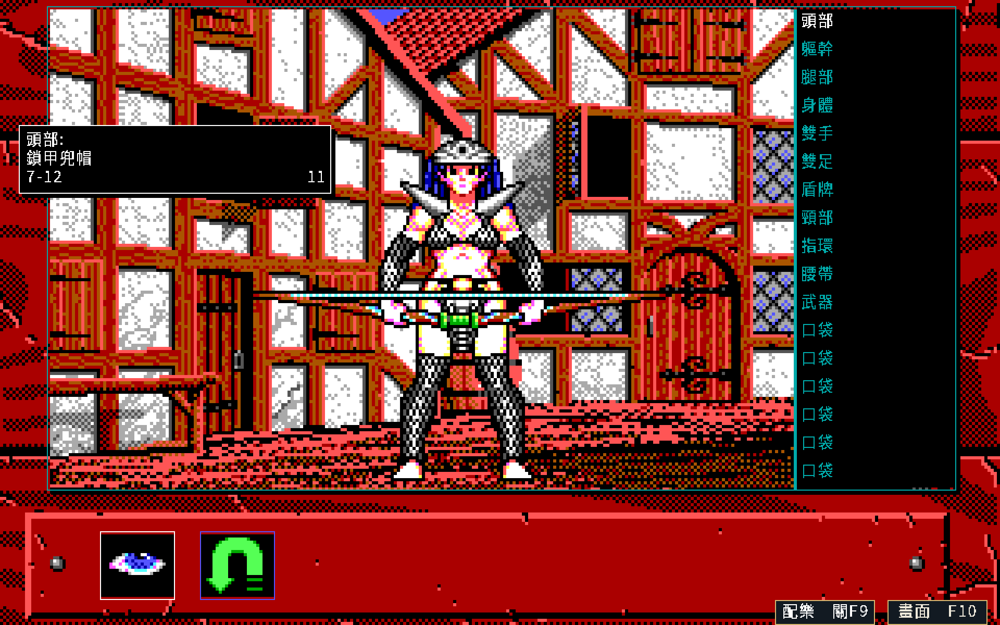
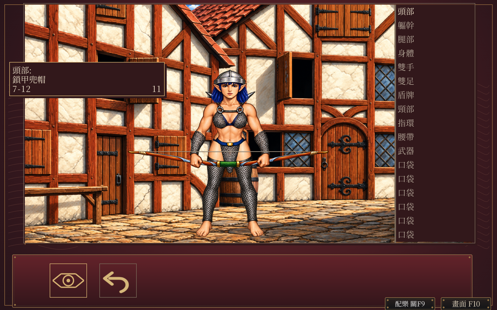
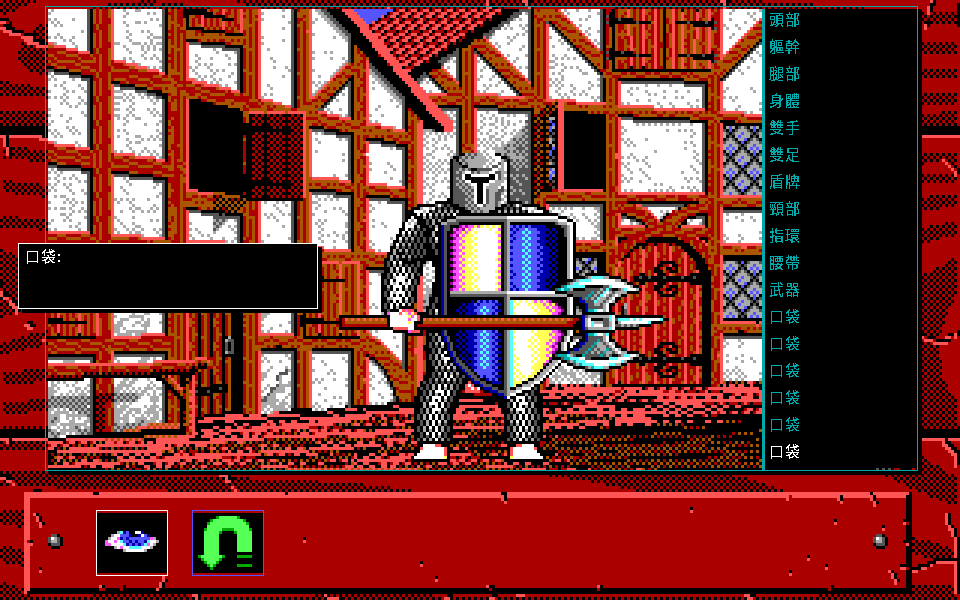
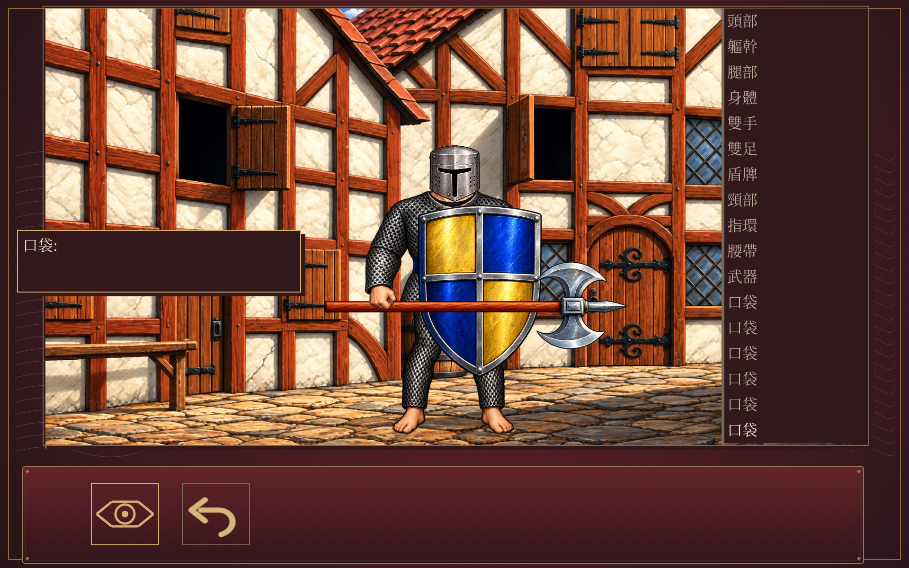
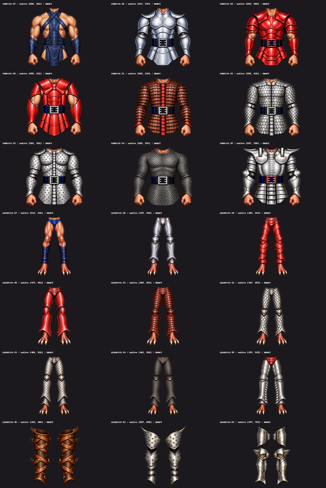

六種體型與六人隊伍 HD 原型
DRAFT：六種體型已接入隔離遊戲，沿1920×1200、手繪與原位置。正式版及現行Release保持。以下比較都是重製中文EGA與隔離HD，並非原版DOS對拍。
範圍與限制 · 收據 · 生成紀錄 · 先前武器比較
遊戲內 F10，同一視窗與狀態
女性精靈與正常招募六人隊伍，兩視窗、鍵鼠共48個設定事件，完整Inn與隊伍狀態保持，HD往返色差0。舊v3與正式保存尚待本批接入。
重製中文 EGA
隔離 HD 原型
六種體型，正常名冊操作
各走物品17槽，另由旅店正常招募六人，共七條路徑每側219狀態；中文紀錄與219張EGA的RGB及透明度保持。下圖是正常控制器畫格，沒有注入角色或裝備。
重製中文 EGA
隔離 HD 原型
21款尺寸補作部件
七張圖集依實際透明空隙裁取；翼族足部已訂正為紅色裸足與三枚白爪。這是部件盤點，不代表每種裝備組合都已驗收。

完整混搭／卸裝、三款獨立護具覆蓋、動作圖示、嚴格原子載入及正式v3仍開放。僅Linux容器範圍，沒有本輪原版完整parity、實機平台、聆聽或自然通關聲明。
圖片依目前private儲存庫的PNG例外保存，不授權公開散布。原始資料、模型、存檔與工具留本機工作區。